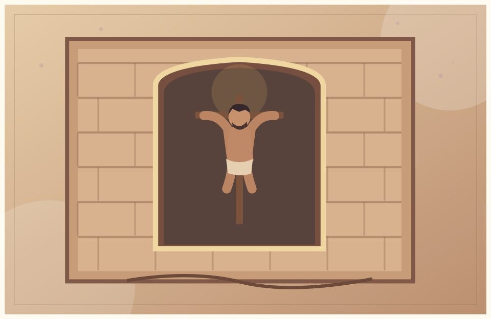
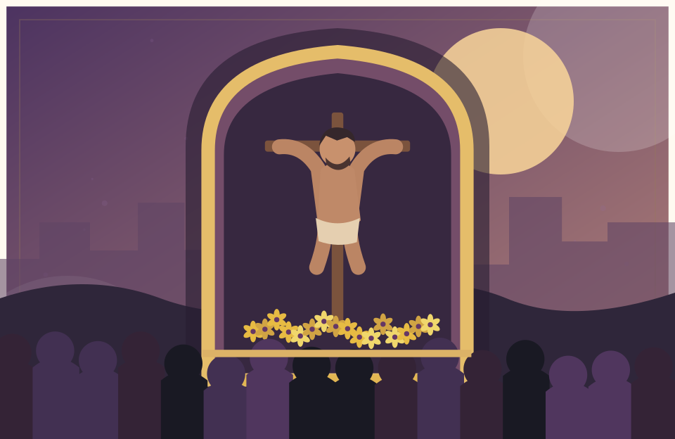
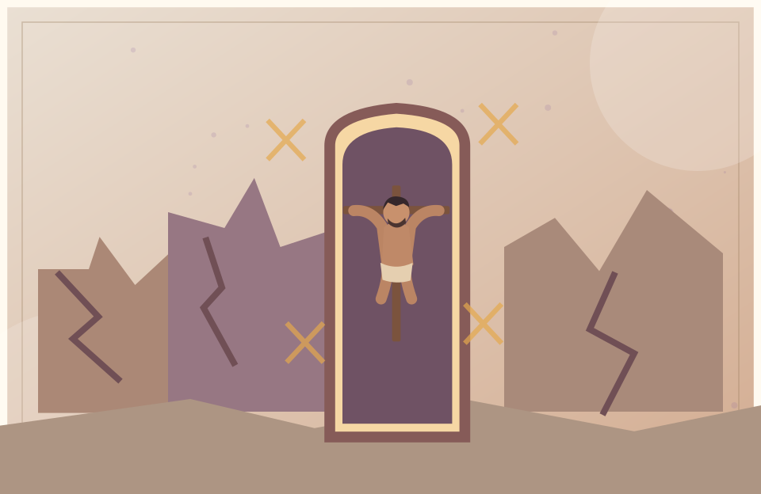
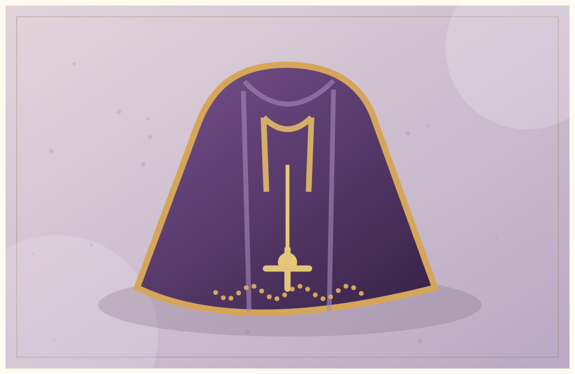
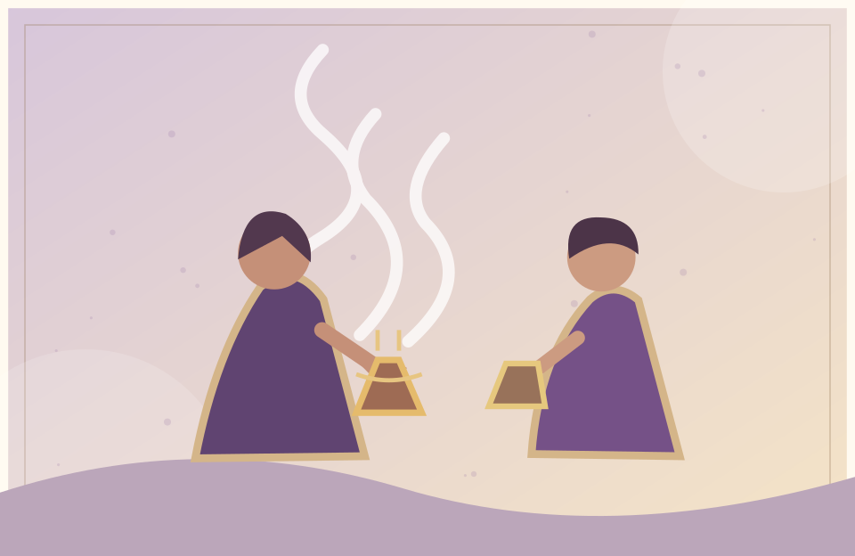
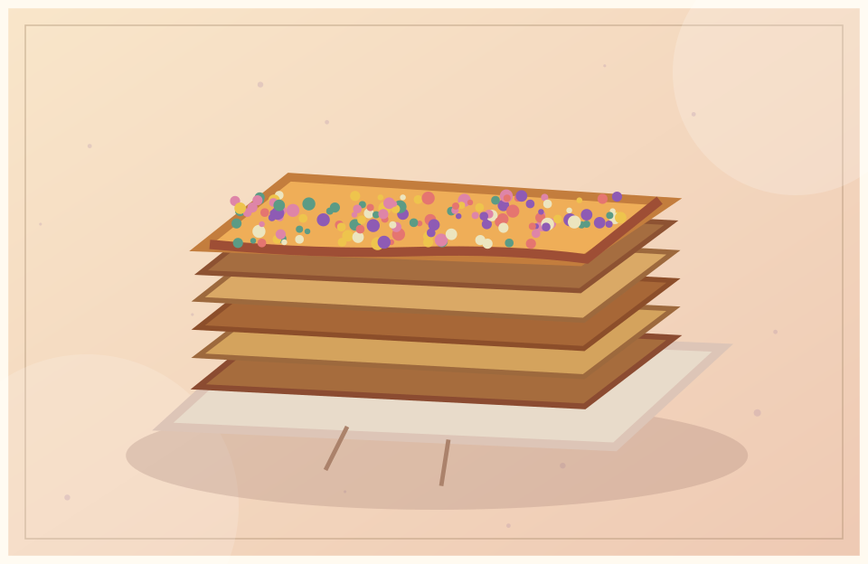
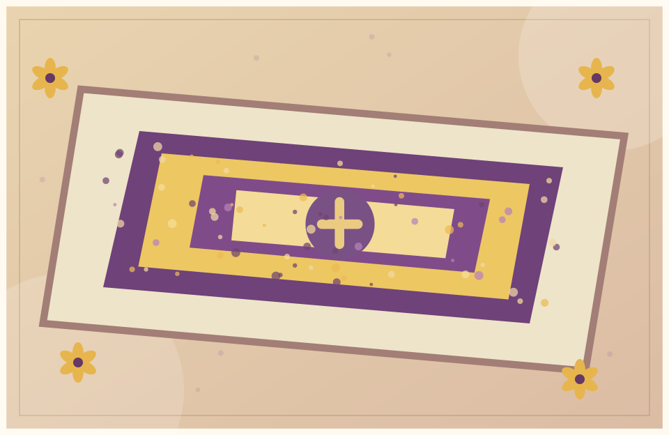
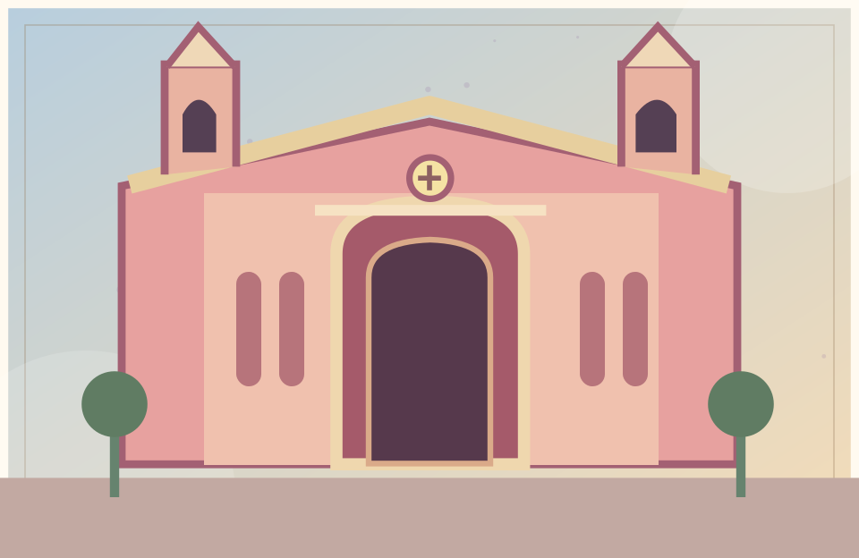
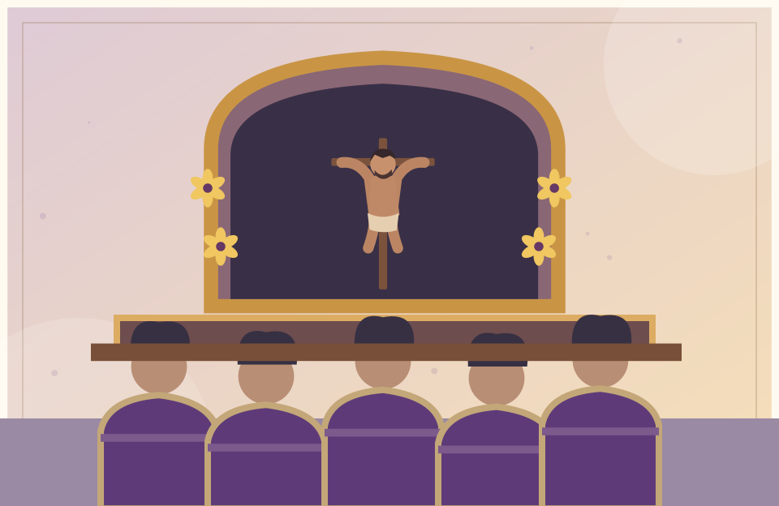

El origen
Una pintura en un muro
Hacia 1651 comenzó la devoción alrededor de esa imagen. Con el tiempo, cada vez más personas se acercaron a rezar y compartir su fe.
Ilustración interpretativa, no foto del mural¿Por qué tantas personas salen a las calles vestidas de morado? Detrás de esta costumbre hay una historia que comenzó en un barrio de Lima hace más de 370 años.
En esta página reuní lo que investigué sobre el Señor de los Milagros, su origen y las tradiciones que siguen vivas.

La historia empieza en el siglo XVII, en el barrio de Pachacamilla, en Lima. Según los relatos históricos, un hombre de origen africano pintó a Jesús crucificado en un muro de adobe.

Hacia 1651 comenzó la devoción alrededor de esa imagen. Con el tiempo, cada vez más personas se acercaron a rezar y compartir su fe.
Ilustración interpretativa, no foto del mural
En 1655 ocurrió un fuerte terremoto en Lima. La tradición cuenta que el muro con la imagen quedó en pie y que los creyentes consideraron esto un milagro.
Ilustración interpretativaComienza la historia de la pintura en Pachacamilla.
Un terremoto marca la historia de la imagen.
La devoción crece después de otro gran sismo y se fortalece la tradición procesional.
La celebración reúne a familias y comunidades. No se trata solamente de mirar una procesión, sino de conocer lo que representa cada costumbre.

Muchas personas visten de morado como señal de devoción. Por eso octubre es conocido como el mes morado.
Ilustración del proyecto
Acompañan el recorrido con incienso. Su participación es una de las imágenes características de la procesión.
Ilustración del proyecto
Este dulce, con miel y grageas, es muy conocido durante octubre y forma parte de la tradición limeña.
Ilustración del proyecto
En algunos recorridos se preparan decoraciones con flores para homenajear el paso de la imagen.
Ilustración del proyecto
El Santuario de Las Nazarenas, en Lima, guarda la pintura original y es un punto importante de esta devoción.
Ilustración del proyecto
Integrantes de la hermandad llevan el anda en hombros y se organizan para avanzar durante la procesión.
Ilustración del proyectoLas procesiones se realizan principalmente en octubre. Los cargadores, las sahumadoras, la música y las flores acompañan el recorrido. Muchos fieles caminan en silencio, cantan o hacen oraciones.
Me parece importante que, además de conocer su origen religioso, aprendamos a respetar las creencias, cuidar los espacios públicos y ayudar a quienes nos rodean.
Estas dos actividades funcionan gracias a JavaScript.
Pulsa el botón para descubrir otro nombre de la imagen.
Al Señor de los Milagros también se le conoce como Cristo de Pachacamilla o Cristo Moreno.
¿En qué lugar de Lima comenzó esta historia?